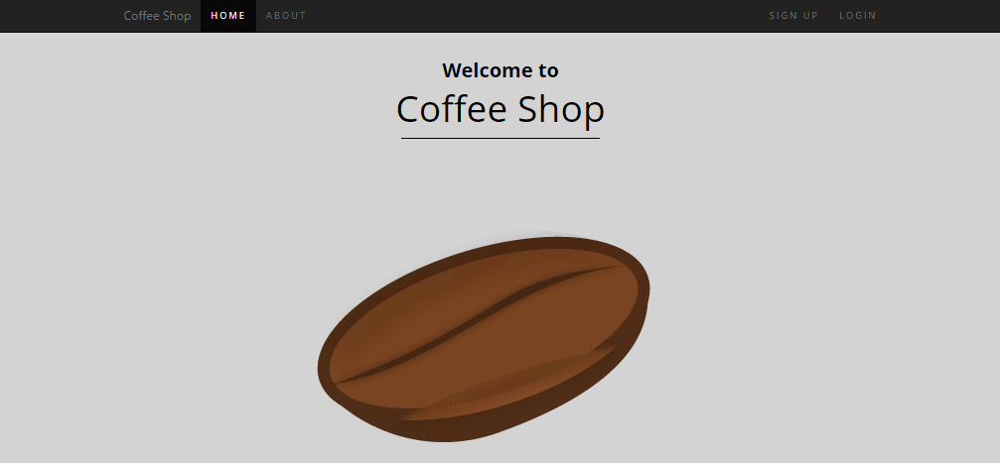
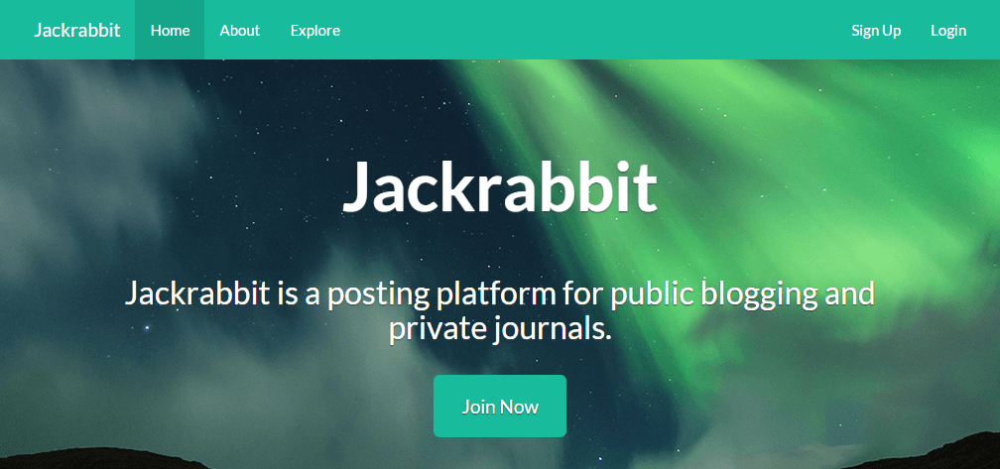
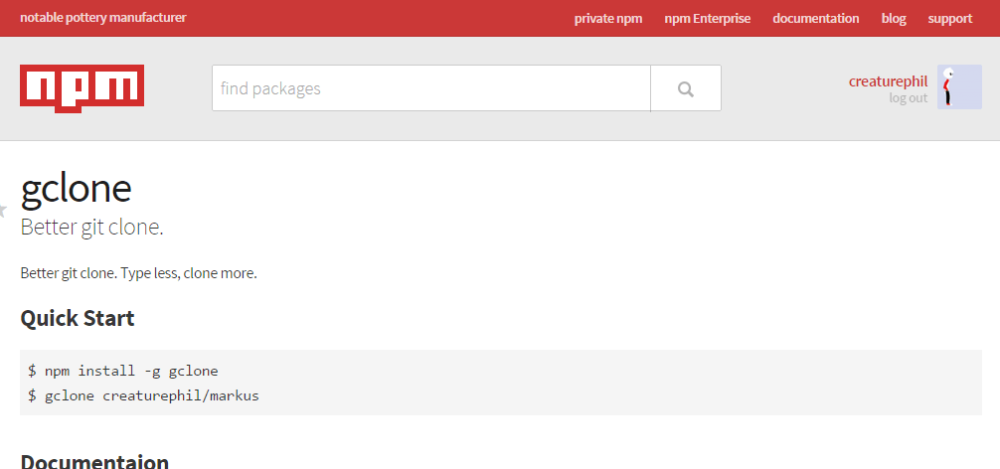
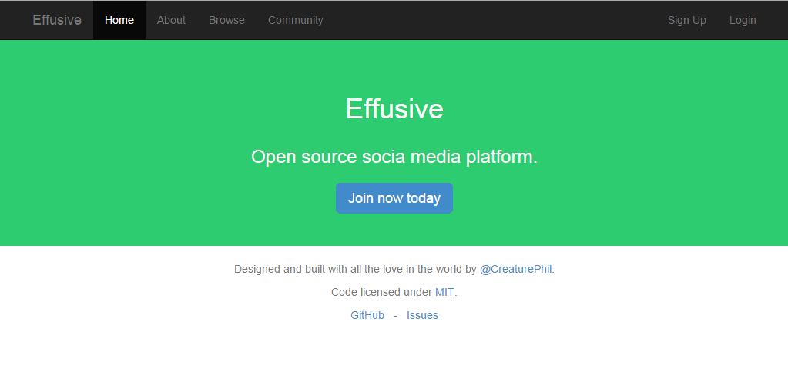
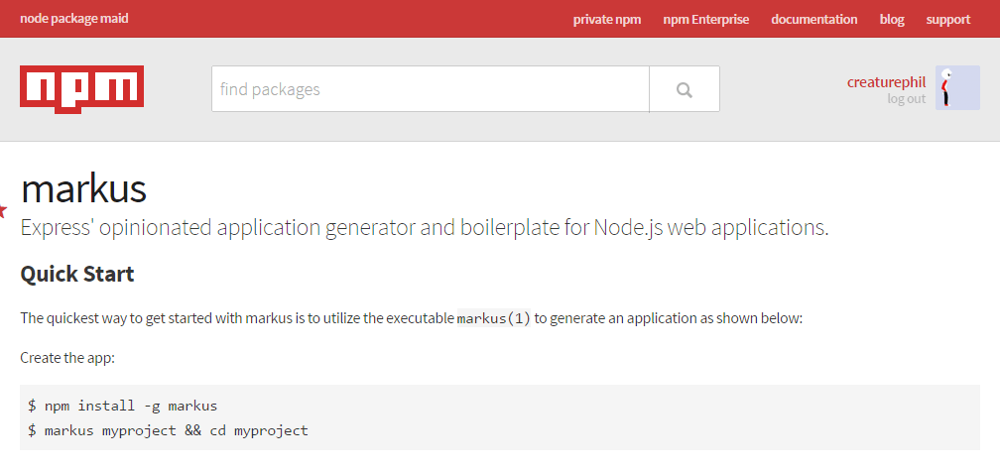
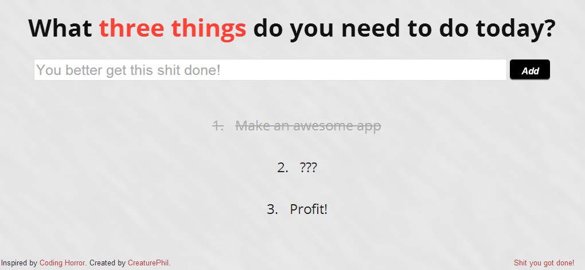
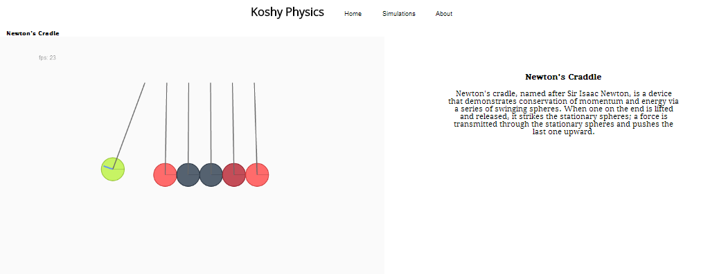
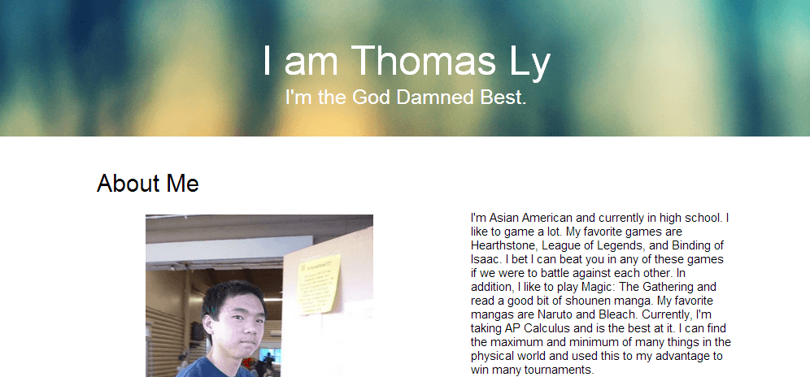

Hello, my name is Philip La and I often go by the username CreaturePhil. I like to create websites and web applications.
Github: https://github.com/CreaturePhil
Twitter: https://twitter.com/CreaturePhil
Email: birkal@outlook.com
Displays YouTube subscriptions in a grid. Built with Full Stack JavaScript (Node.js Express, and MongoDB).
Social media network that specializes in music. It's last.fm but not horribly over-complicated. Built with Full Stack JavaScript (Node.js Express, and MongoDB).
Posting platform for public blogging and private journals. Built with Full Stack JavaScript (Node.js Express, and MongoDB).
NPM Package which is a better git clone. Type less, clone more. Built with Node.js (JavaScript).
An open source social media platform. Built with Full Stack JavaScript (Node.js Express, and MongoDB).
NPM Package that is an Express' opinionated application generator and boilerplate for Node.js web applications. Built with Node.js (JavaScript).
Inspired by Coding Horror's blog post on todo lists. This todo list limits you to 3 todos so you don't use it as much of a crutch and actually help you get stuff done. Built with AngularJS (JavaScript).
Physics Simulations using JavaScript physics engines. Built with JavaScript.
A responsive website for a friend about a friend. Built with HTML/CSS.